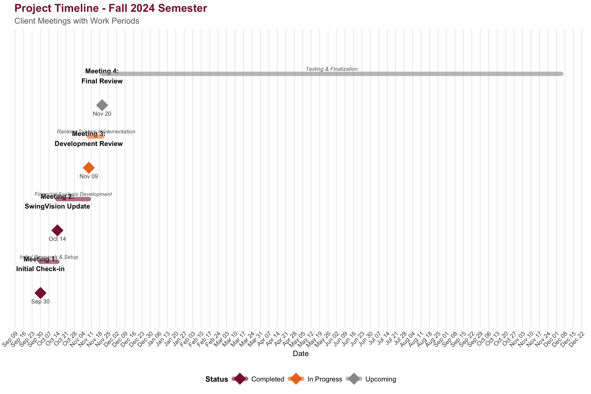
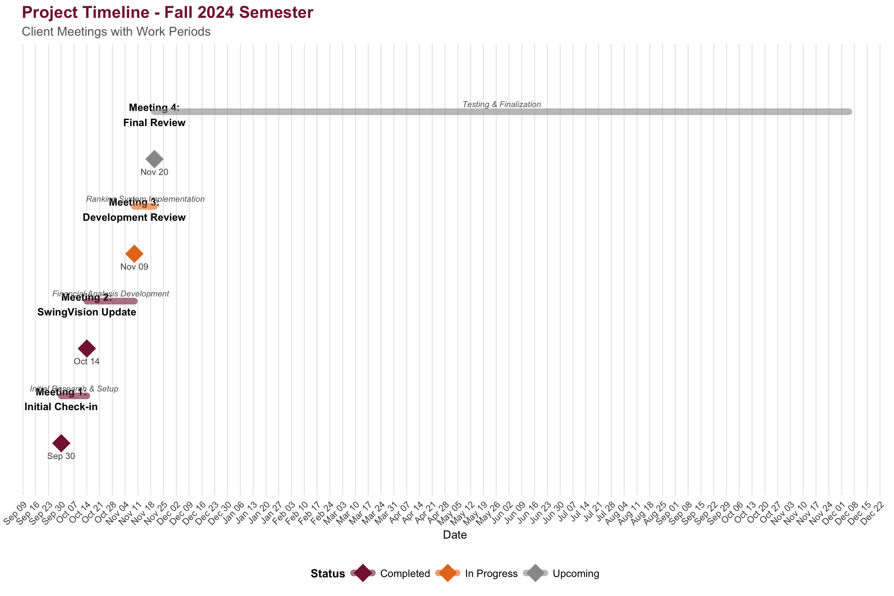

Warning: Using `size` aesthetic for lines was deprecated in ggplot2 3.4.0.
ℹ Please use `linewidth` instead.
Meeting Notes & Progress Updates
This page documents our ongoing collaboration with VT Club Tennis, tracking meetings, decisions, and project milestones.
Warning: Using `size` aesthetic for lines was deprecated in ggplot2 3.4.0.
ℹ Please use `linewidth` instead.

| Date | Milestone | Status |
|---|---|---|
| Sept 1 | Initial Client Meeting | ✅ Completed |
| Sept 15 | Requirements Gathering Complete | ✅ Completed |
| Oct 1 | Development Phase Begins | 🔄 In Progress |
| Nov 1 | Testing Phase Begins | ⏳ Upcoming |
| Nov 25 | Client Review & Feedback | ⏳ Upcoming |
| Dec 10 | Final Delivery | ⏳ Upcoming |
Last Updated: November 18, 2025